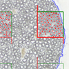
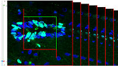
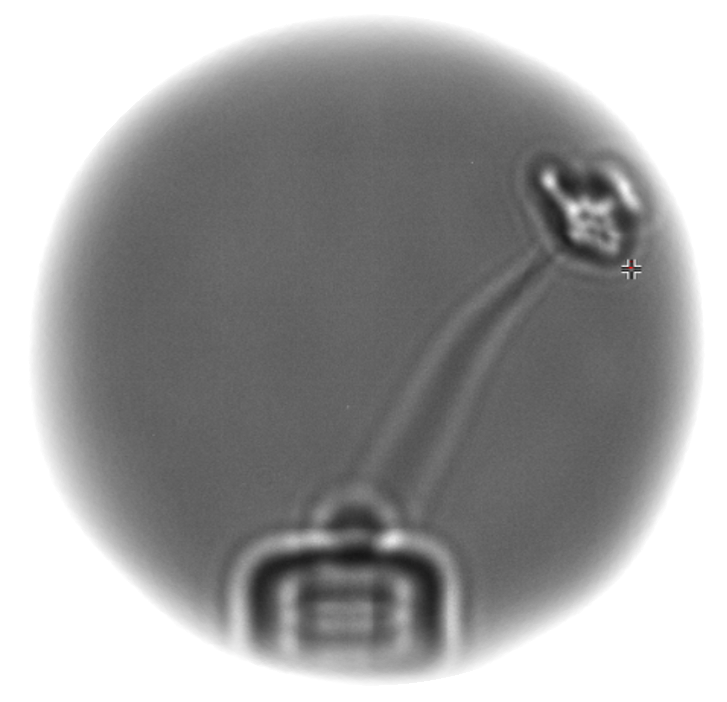

NeuroCounter
|
|
 |
- Image analysis program for semi=interactive particles detection and quantification.
- Program detects particles and calculates corresponding features (like area,
diameter, circularity) inside the stereological counting frames. The estimated
values valid for the whole image are calculated and saved in a text format readable
by Excel.
- Learn more or install
|
|
StackGazer
|
|

|
- Estimates the number of cells inside the volume of interest using 3D
stereological probe.
- Extended version supplied with eye tracker helps to find the last cell's
section in Z-stack by gaze
- Learn more
|
|
ViscoVidi
|
|

|
- Off-line video analysis of moving object recorded by fast video camera.
- Detection of elliptical cantilever head with subpixel precision.
- Interactive graphs alignment and analysis
- Learn more..
|